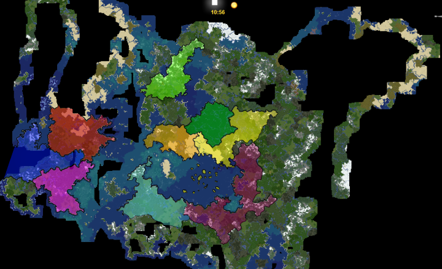

Bienvenue dans le Raspute
Histoire
- Raspute 1.0
Le raspute prend sa source dans une idée farfelus d'un groupe d'amis, "Faisons une serveur minecraft où on construit tous nos trucs !". Ainsi le raspute 1.0 vit le jour sur un micro-ordinateur de la marque Raspberry le 20 octobre 2019, à ce moment là le serveur n'a pas encore de nom, ce n'est qu'après quelques conversations sur Discord que le nom de Raspute fut trouvé. Par la suite un serveur discord éponyme fut créé pour accueillir tous les membres du serveur. Les joueurs étaient à l'origine au nombre de 12 :- Hallyon (Hébergeur du serveur)
- Anthos13
- Xorces
- Hopox
- Ariax08
- LittramFr
- Taralhan
- Akiraa
- FloLePyro
- Crôm
- Thagvi
- Pinguines
Ce vaste royaume est frontalier avec celui de Xorces et de littramFr il est
représenté par
la couleur violette. Une seule ville a été bati "Kastariska". C'est la capitale
et n'est
composée
que d'un gigantesque chateau et de vaste champs.
Ce royaume possède plusieurs climats et paysages tel que des plaines, des
forets, des
montagnes et une cote situé au fond de la mer du milieu.
Ce royaume était connu pour sa neutralité et sa croyance au dieu porte.
Ce royaume est frontalier avec celui de Xorces et de Hopox il est représenté par
la couleur verte foncée. Une seule ville a été bati "Home sweet home". C'est la
capitale et n'est
composée que de quelques cabanes dans les arbres et de passerelles passant
traversant les arbres et les feuillages.
Ce royaume n'est composé que d'une jungle sans fin regorgeant de mystère, de
trésors et de pièges !
Ce royaume holstère n'a jamais pris positions dans les débats politiques du
monde.
Ce pays est frontalier avec celui de Anthos13, de Hopox et d'Hallyon il est
représenté par
la couleur jaune. Ce pays est composé de déserts, montagnes, plaines, jungles,
forets et d'archipels.
Il accueille quatre grandes villes et plusieurs vestiges. Tout d'abord la
capitale "kyodaina" alias la ville des sables,
c'est une vaste ville portuaire dans le désert célébre pour ses entrepots, ses
statues et son chantier navale, elle est le coeur commercial du pays.
Ensuite il y a la ville de "Wazuré", une ville caché dans la bamboozerai à la
frontière avec le royaume d'Anthos13. Cette ville est célébre pourson ranch, sa
production industrielle de bamboo et ses bains de sources chaudes.
Puis vint le monastère "Ebrius", autour duquel un petit village s'est construit,
cette communauté est connue pour sa pieuté, ses tours en zepplin et le début
d'un projet de métro.
Enfin il y a la ville de "Météora", cette ville est abrité dans le cratère d'une
vielle météorite qui s'est remplie d'eau. Elle est connue pour son jolie
paysage, son laboratoire et sa production locale de céréale et de vin.
Dans ce pays on peut aussi y retrouver les vestiges d'une arène naine, d'un
temple elfique, d'une ancienne ville desertique paradisiaque dont la muraille
perdure à la frontière du royaume d'hopox. Sans oublier les temples de la jungle
et les temples marins immergé par la monté des eaux.
Ce Pays fournissait beaucoup d'or et de bamboo aux autres royaumes et était en
aliance avec celui de Taralhan et de LittramFr.
Ce royaume est frontalier avec celui de Anthos13, de Xorces il est
représenté par
la couleur Orange. Ce pays est principalement composé de déserts, montagnes, de
savane et de foret. Ce royaume est composé de 3 villes. Tout d'abord la ville de
"Obodoze" capitale du royaume connue pour son port, son chateau et son
architecture Parigo-Africaine. Ensuite il y a le village caché de la foret, sans
nom connu, il est réputé pour son activité forestière et minière.
Enfin une nouvelle ville en cours de construction en bord de mer. On peut aussi
retrouver
sur ce territoire le seul et unique Stade de foot de ce monde, la maison d'un
milliardaire sous l'eau et quelques usines de productions locales.
Ce royaume à longtemps était hostile envers les autres pays.
Ce royaume discret reclu de l'autre coté du grand lac nord, est représenté par
la couleur vert claire. Il est principalement composé de montagne et de foret.
Ce royaume est composé de 3 grandes ville médiévales. Tout d'abord la
forteresse, une grande place forte indépendante du reste de son royaume, c'est
une vrai bunker de survie tronant au sommet des falaise bordant le lac Nord.
Ensuite il y a la ville portuaire des montagnes, sans nom connue, elle est le
coeur économique du pays. Elle se situe entre rive et montagne, elle jongle
entre production minière, agricole, et fret commerciale.
Enfin il y a, une ville sans nom elle aussi, qui est connue pour son accès
difficile entre deux pans de montagne. Cette ville dicrète produit
principalement des produits agricoles en tous genres.
Ce vaste royaume qui est frontalier aux royaumes d'Hallyon et de Crom, ce
dernier est composé de montagnes, forets et plaines. Ce royaume est composé de 3
villes. Tout d'abord la cité forteresse et capitale "Bagolmoec", composé
d'immense muraille et d'un chateau imposant, la cité possède de vaste champs une
tour de mage et un petit bourg. Ensuite il y a "Selalimer", ville portuaire et
centre économique du royaume, celle-ci est souvent un point de repos pour les
navigateurs traversant la mer du centre.
Enfin il y a, une lugubre cité dans une foret maléfique. on raconte qu'elle
serait habité par différentes espèces mort-vivantes. On peut l'appercevoir
depuis la mer grâce au gallion fantomatique acosté dans son port.
Ce royaume est allié à celui de Xorces et Taralhan.

Symbôle du Raspute 1.0

Carte des territoires